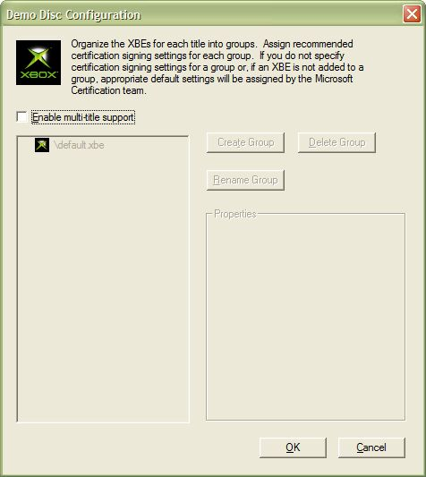
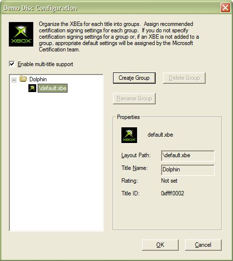
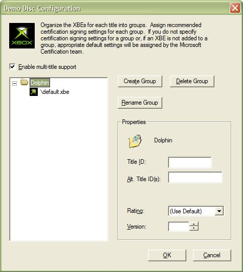

You can use XbGameDisc to create a disc layout for a demo disc that contains multiple Xbox game titles. To create a multi-title disc, click Demo Disc Configuration on the Tools menu. The Demo Disc Configuration dialog box appears, as shown here:

Select the Enable multi-title support check box to enable multi-title support for the current disc layout in XbGameDisc.
Note The Demo Disc Configuration feature of XbGameDisc is intended only for creation of multi-title demo discs. If you are creating a standard, single-title game disc, you do not need to use the Demo Disc Configuration dialog box.
When the Demo Disc Configuration dialog box first opens, the tree view on the left side of the dialog box lists all the XBE files in the current layout, whether or not those files are in the Unplaced Files Window. Within a multi-title game disc, you may arrange separate XBE files into groups. Each group contains recommended title IDs, ratings, and version data for use by the Microsoft Xbox certification team. If you do not want to specify separate certification data for any of the XBEs in your demo disc, you can leave those XBEs out of groups entirely.
Note If you do not specify any certification data for the XBE files in a demo disc, the Xbox certification team applies a default set of certification data to the XBE files.
Click Create Group to make a new group. The group appears as a folder icon in the tree view, with its name selected for editing. Type a name for the group. You may later delete a group by selecting it and clicking Delete Group, or rename a group by selecting it and clicking Rename Group.
Drag and drop XBE files in the tree view to place them into folders.
When you select an XBE file in the tree view, the Properties frame displays read-only information that describes the selected XBE, as shown here:

When you select a group in the tree view, the Properties frame enables you to edit the properties of that group, as shown here:

The following properties are available:
When you have set up the demo disc configuration to your liking, click OK to close the dialog box and save the multi-title layout information.